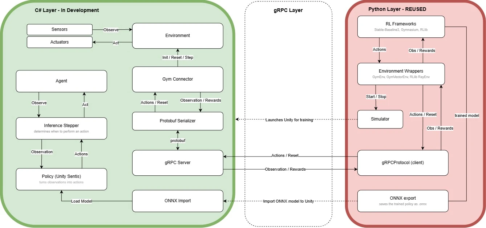
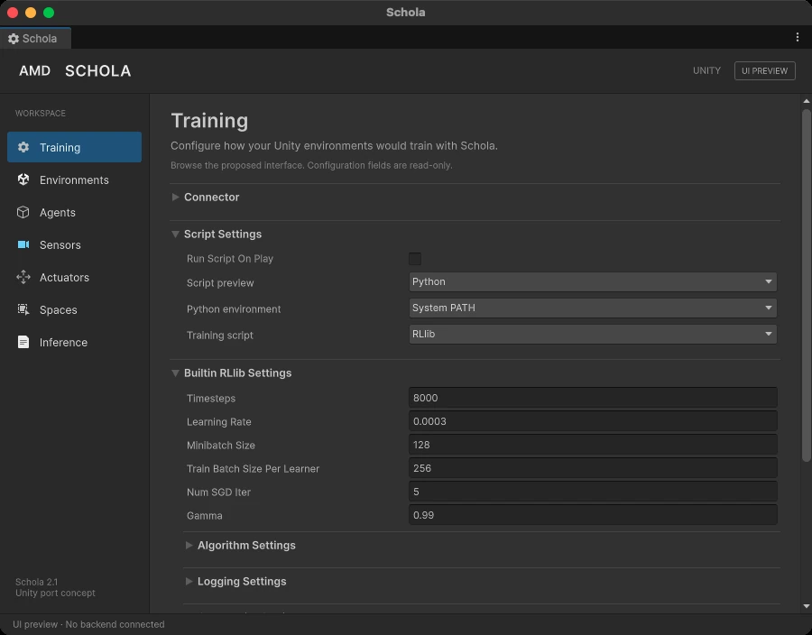
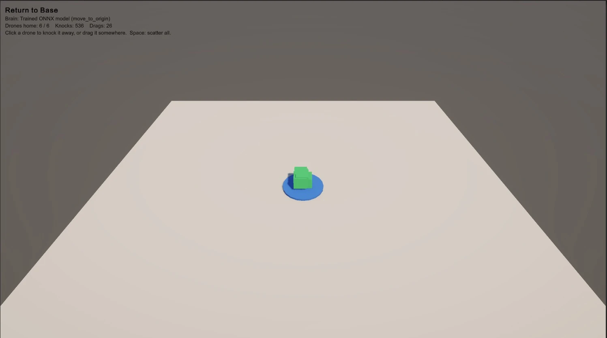

amd schola for unity
extending amd's reinforcement learning toolkit from unreal engine to unity, with reusable agent interfaces, episode control, and local onnx inference.

our team is extending amd's original schola toolkit to make unity environments usable with its python training ecosystem and bring exported policies back into the engine for inference. my role is unity integration lead and amd partner liaison.
the current outcome is working unity agents, local episode control, and onnx inference. end-to-end unity–python training integration remains unfinished. this page reflects progress documented through october 2026.
my contribution
i led the early design of environment, agent, sensor, actuator, and policy abstractions, and built an editor workflow prototype for technical discussions with amd.
i also wrote the protobuf-to-c# generation script and its ci workflow. nine regression tests cover tool integrity, missing or changed generated files, failed generation, baseline deletion, and preservation of unity metadata. the tooling uses checksum-verified generators and checks output without overwriting the committed baseline. comparison against committed generated sources activates once the first c# baseline exists.
alongside architecture diagrams and documentation, i coordinated partner reviews, assembled the return to base demonstration, and recorded the walkthrough. my ci contribution is the code-generation tooling and checks, plus review and merge support; the broader pipeline was integrated collaboratively.
the runtime is a team effort. teammates implemented the sensor and actuator paths, environment lifecycle, onnx policy, and inference stepper.
observe, think, act
PositionSensor reads world position into a keyed observation. SentisPolicy evaluates the onnx model through unity inference engine, and TranslateActuator applies movement. SimpleStepper coordinates the cycle so every agent observes before any acts, and decisions are collected before actions are applied.
shared Space and Point types describe the observation and action contracts. matching keys, dimensions, and value counts helps catch incompatibilities even when a model loads successfully.
ScholaEnvironment provides initialization, stepping, reward and termination hooks, and reset behavior. reset restores the initial pose and notifies episode hooks. these local apis establish episode management; the python trainer connection is a separate integration milestone.

from interface design to a working demo
my editor-only ui prototype covers training, environments, agents, sensors, actuators, spaces, and inference. its read-only fields let us discuss a developer workflow before connecting a backend.


the partner demo uses the actual runtime components. i assembled six cube-shaped drones sharing a trained onnx policy. clicking or dragging a drone moves it away from base; pressing space scatters all six. once released, each returns home, turns from orange to green, and updates the counter.


this is inference with an already-trained model, with no python process required. the scene is a presentation demo rather than a required toolkit component. the captures identify the onnx policy explicitly: movement alone would not prove inference, because the demo also has a fallback controller.
watch the partner progress demo
current status
- agents, sensors, actuators, keyed contracts, local episode control, and onnx policy execution are implemented.
- team editmode tests cover observations, action validation, episode lifecycle, model compatibility, and stepping.
- ci includes formatting and metadata checks, unity tests, python regression checks, protocol generation, and release tooling.
- the editor interface remains an exploratory mockup. unity–python training is unfinished, and the packaged setup sample is in progress.
- the headless unity smoke-test workflow still needs a dedicated player project and integration prerequisites. existing mock-protocol checks do not establish a working training connection.
the next milestone is a reliable training connection that preserves the local observation/action contracts and episode semantics, followed by an importable setup sample and a headless test of the real connection.
built with
c#, unity 6.3, python, onnx, protobuf, and github actions.
demo captures, editor mockups, and architecture diagram by mohammad mahi ali mukati for the team project. amd schola is an amd project. media attribution and license.